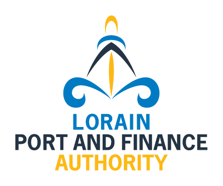

Lorain Port and Finance Authority Moves Forward with Black River Landing Amphitheater Project
Board of Directors Approves Construction Contract with The Whiting-Turner Contracting Company; Groundbreaking Set for September 15th
LORAIN, OHIO – The Lorain Port and Finance Authority is pleased to announce that its Board of Directors has unanimously approved a resolution to enter into a Guaranteed Maximum Price (GMP) contract with The Whiting-Turner Contracting Company for construction management services for the highly anticipated Black River Landing Amphitheater Project.
The resolution, passed during the Board’s August regular meeting, represents a major milestone in bringing this transformative entertainment venue to the Lake Erie shoreline. The approved GMP contract totals $6,873,039 for construction management services, marking the transition from planning to active construction phases. The Lorain Port made the decision to move forward with the dollars raised for this project to date, which is allowing them to construct the permanent stage and canopy and restructure the amphitheater lawn and front of house. Additional philanthropic commitments are still needed for the green room facility, with fundraising efforts still underway to raise those remaining dollars. It was important to make the decision to begin construction now to ensure work takes place in the off season so as to not disturb the summertime schedules.
“This is an exciting day for Lorain and the entire region,” said Brad Mullins, Chairman of the Board of Directors. “The Black River Landing Amphitheater will be a game-changer for our community, providing a world-class entertainment venue that will attract visitors, support local businesses, and create lasting economic impact.”
Project Background and Vision
Black River Landing has served as the cultural heart of Lorain since its development began in 2003. What started with a stage addition and temporary canopy top in 2006 has grown into the county’s largest destination, attracting over 150,000 visitors annually. The venue has successfully hosted festivals, concerts, and summer markets, but the original canopy from 2006 has reached the end of its lifecycle, prompting the Board of Directors to pursue a permanent, world-class amphitheater solution.
The new amphitheater design will include a permanent stage and top, as well as restructuring of Black River Landing to develop better sightlines of the stage, waterfront, and downtown. This strategic investment will transform the cherished waterfront space while maintaining its role as a community gathering place.
Currently, nearly 35% of Black River Landing’s attendees come from outside Lorain County, demonstrating the venue’s significant draw for regional tourism. The amphitheater upgrade will provide more unique experiences, improved connectivity between the waterfront and city, and activate the public space from weekend-only use to a 365-day-a-year amenity.
The amphitheater project has been carefully planned through extensive preconstruction work and multiple phases of development. After thorough review and consideration of all project elements, the Board determined that moving forward with The Whiting-Turner Contracting Company’s GMP proposal will ensure the highest quality construction while maintaining fiscal responsibility.
Construction is scheduled to begin with an official groundbreaking ceremony on September 15th, with completion targeted for spring 2026. The venue will serve as a premier destination for concerts, festivals, and community events, enhancing Lorain’s position as a cultural and entertainment hub on Lake Erie.
“We’re thrilled to partner with The Whiting-Turner Contracting Company, a respected leader in construction management,” said Tiffany McClelland, Executive Director. “Their expertise and commitment to excellence align perfectly with our vision for this landmark project.”
The Black River Landing Amphitheater Project represents a significant investment in Lorain’s future, designed to boost tourism, create jobs, and provide residents and visitors with exceptional entertainment experiences in a beautiful lakefront setting.
Additional details about the groundbreaking ceremony and project timeline will be announced in the coming weeks.